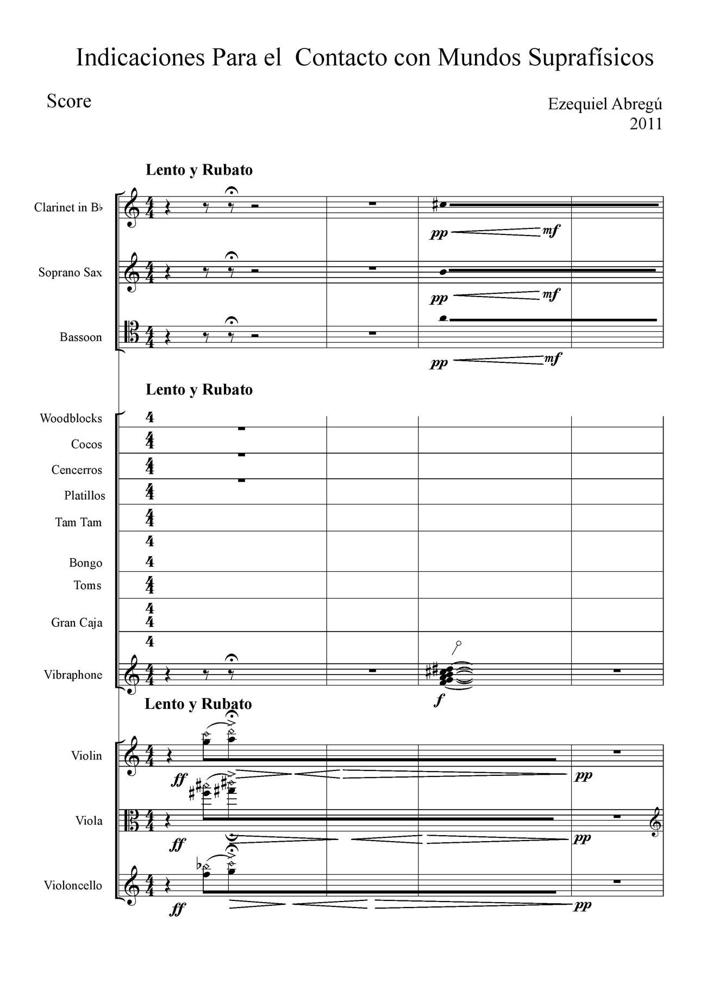

13 Anexos
13.1 Artículos publicados en el marco de esta tesis
Calcagno, E. R., Abregú E. L., Eguía M. C. y Vergara, R. O. The Role of Vision in Auditory Distance Perception. Perception 41, 175-192 (2012).
Versión Online: https://www.ncbi.nlm.nih.gov/pubmed/22670346
Abregú E. L., Calcagno, E. R. y Vergara, R. O. La distancia como factor estructural de la música. Revista Argentina de Musicología No 12-13, 379-400 (2012).
Versión Online: http://www.aamusicologia.org.ar/wp-content/uploads/2017/06/12-13_art_13.pdf
Calcagno, E. R., Abregú, E. L. y Vergara, R. O. Revisión de los aspectos más relevantes en el estudio de la percepción auditiva de distancia. Interamerican Journal of Psychology, Vol. 48, Nº1 3-12 (2014).
Versión Online: https://journal.sipsych.org/index.php/IJP/article/view/240
Etchemendy, P. E., Spiousas, I., Calcagno, E. R., Abregu, E. L., Eguia, M. C., Vergara, R. O. Direct-location versus verbal report methods for measuring auditory distance perception in the far field. Behavior Research methods. Vol 49, 1-14 (2017).
Versión Online: https://link.springer.com/article/10.3758%2Fs13428-017-0939-x
Etchemendy, P. E., Abregu, E. L., Calcagno, E. R., , Eguia, M. C., Vechiatti, N., Iasi, F., Vergara, R. O. Auditory environmental context affects visual distance perception. Scientific Reports. Nº 7 (2017).
Versión Online: https://www.nature.com/articles/s41598-017-06495-3
Spiousas I., Etchemendy P., Eguia M. C., Calcagno E. R., Abregú E. L. y Vergara R. O. Sound spectrum influences auditory distance perception of sound sources located in a room environment. Frontiers in Psychology. (2017).
Versión Online:http://journal.frontiersin.org/article/10.3389/fpsyg.2017.00969/full
13.2 Dos piezas para ensamble instrumental
Instrucciones para el contacto con mundos suprafísicos
Los océanos tienen oídos
